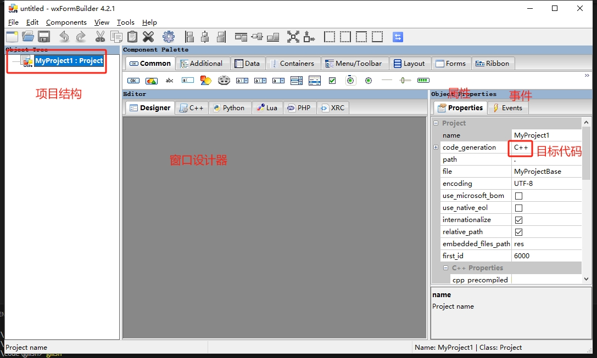
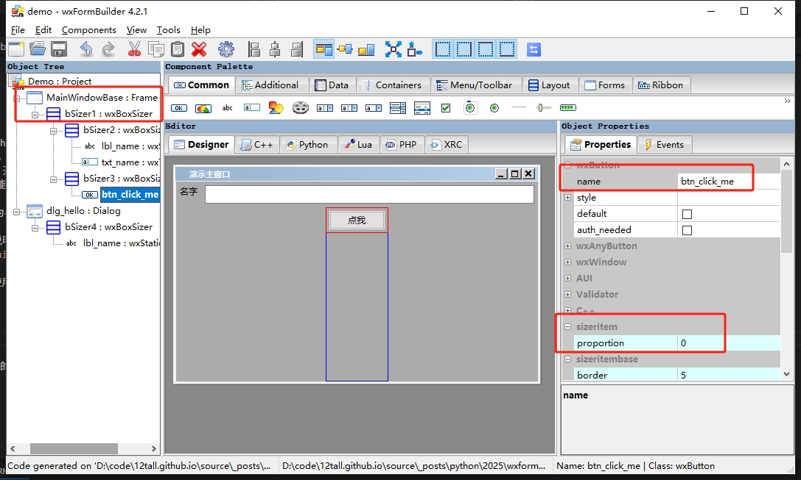
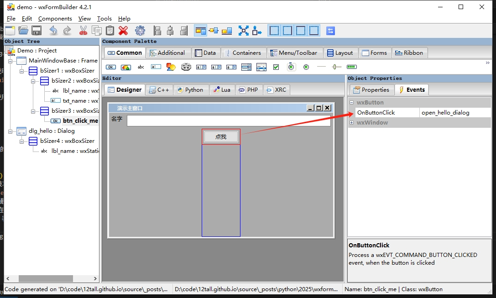
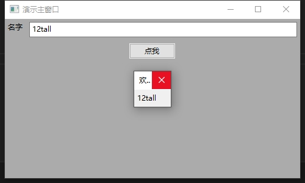

wxFormBuilder 使用笔记
一直想找一个比较轻量、易用的Python GUI 库，同时又能比较好的兼容Nuitka 打包。常见的GUI 库多多少少有些问题：
- PyQt、PySide 有点太重了，不好打包；
- Tkinter/TCL 使用不方便，开发效率不高；
- 基于WebView2 的虽然表现能力很强，但是需要额外学习JS。
综上所述，选择了wxpython 作为小工具软件开发的GUI 库，其有以下优点：
1. 原生跨平台；
2. 打包后体积小，下文详细说明；
3. 具有窗口设计器wxFormBuilder。
本文仅记录wxFormBuilder 在使用中的一些技巧，并不会特别详尽。
wxFormBuilder 界面

通过主界面可以看出整个软件和VS 的风格很像，点击工程，右边的属性栏可以更改生成代码的类型和文件名。

在窗口设计中，有以下需要注意的技巧点：
- 工程下必须要有
Frame、Panel或者是Dialog等元素； - 通过
Layout可以添加布局，最常用的就是BoxSizer支持横向和纵向布局； - 与常见的元素唯一Id 不一样，在Python 代码中
name是用来寻找元素的依据； - 元素属性中的
proportion=n表示占用剩余空间的比例，为0 表示不自动扩展。

在设计器中指定事件处理函数，然后在自己的代码中重写该函数即可。
代码方案
将设计器生成的代码作为基类，然后通过自定义类继承这些基类，同时重写函数、修改属性，这样做有以下几点好处：
- 有些特殊样式在设计器中无法修改，只能通过代码修改；
- 更新基类的设计后，不需要重新修改自定义代码。
以demo 工程生成的代码为例：
# -*- coding: utf-8 -*-
###########################################################################
## Python code generated with wxFormBuilder (version 4.2.1-0-g80c4cb6)
## http://www.wxformbuilder.org/
##
## PLEASE DO *NOT* EDIT THIS FILE!
###########################################################################
import wx
import wx.xrc
import gettext
_ = gettext.gettext
###########################################################################
## Class MainWindowBase
###########################################################################
class MainWindowBase ( wx.Frame ):
def __init__( self, parent ):
wx.Frame.__init__ ( self, parent, id = wx.ID_ANY, title = _(u"演示主窗口"), pos = wx.DefaultPosition, size = wx.Size( 500,300 ), style = wx.DEFAULT_FRAME_STYLE|wx.TAB_TRAVERSAL )
self.SetSizeHints( wx.DefaultSize, wx.DefaultSize )
bSizer1 = wx.BoxSizer( wx.VERTICAL )
bSizer2 = wx.BoxSizer( wx.HORIZONTAL )
self.lbl_name = wx.StaticText( self, wx.ID_ANY, _(u"名字"), wx.DefaultPosition, wx.DefaultSize, 0 )
self.lbl_name.Wrap( -1 )
bSizer2.Add( self.lbl_name, 0, wx.ALL, 5 )
self.txt_name = wx.TextCtrl( self, wx.ID_ANY, wx.EmptyString, wx.DefaultPosition, wx.DefaultSize, 0 )
bSizer2.Add( self.txt_name, 1, wx.ALL, 5 )
bSizer1.Add( bSizer2, 0, wx.EXPAND, 5 )
bSizer3 = wx.BoxSizer( wx.HORIZONTAL )
self.btn_click_me = wx.Button( self, wx.ID_ANY, _(u"点我"), wx.DefaultPosition, wx.DefaultSize, 0 )
bSizer3.Add( self.btn_click_me, 0, wx.ALL, 5 )
bSizer1.Add( bSizer3, 1, wx.ALIGN_CENTER_HORIZONTAL, 5 )
self.SetSizer( bSizer1 )
self.Layout()
self.Centre( wx.BOTH )
# Connect Events
self.btn_click_me.Bind( wx.EVT_BUTTON, self.open_hello_dialog )
def __del__( self ):
pass
# Virtual event handlers, override them in your derived class
def open_hello_dialog( self, event ):
event.Skip()
###########################################################################
## Class dlg_hello
###########################################################################
class dlg_hello ( wx.Dialog ):
def __init__( self, parent ):
wx.Dialog.__init__ ( self, parent, id = wx.ID_ANY, title = _(u"欢迎"), pos = wx.DefaultPosition, size = wx.DefaultSize, style = wx.DEFAULT_DIALOG_STYLE )
self.SetSizeHints( wx.DefaultSize, wx.DefaultSize )
bSizer4 = wx.BoxSizer( wx.VERTICAL )
self.lbl_name = wx.StaticText( self, wx.ID_ANY, _(u"MyLabel"), wx.DefaultPosition, wx.DefaultSize, 0 )
self.lbl_name.Wrap( -1 )
bSizer4.Add( self.lbl_name, 0, wx.ALL, 5 )
self.SetSizer( bSizer4 )
self.Layout()
bSizer4.Fit( self )
self.Centre( wx.BOTH )
def __del__( self ):
pass然后继承该基类，编写app.py;
from MyProjectBase import MainWindowBase,dlg_hello
import wx
class Hello(dlg_hello):
def __init__(self, parent, name):
"""对话框初始化是可以接收额外的参数"""
super().__init__(parent)
self.lbl_name.SetLabelText(name)
class MainWindow(MainWindowBase):
def __init__(self, parent):
super().__init__(parent)
def open_hello_dialog(self, event):
"""重写设计器中指定的事件处理函数"""
dlg = Hello(self, self.txt_name.GetValue())
dlg.ShowModal()
# 程序运行的基本流程
app = wx.App()
main_window = MainWindow(None)
main_window.Show()
app.MainLoop()程序的运行效果如下：

不过在编译时执行nuitka --standalone --onefile app.py 可能会提醒ModuleNotFoundError: No module named 'wx._xml'。
这个时候需要添加编译参数--include-module=wx._xml 即可。该程序在打包之后的二进制文件体积不到12M，相对于其他GUI 库要小很多了。
不足
- 因为追求轻量，所以对复杂UI 的支持不足，例如表格添加按钮等元素。最好做单独的编辑界面；
- 关于打包体积在使用numpy、pandas 这类库时很方便，但是体积很大且很多功能应该都用不到，考虑是否值得引入吧。